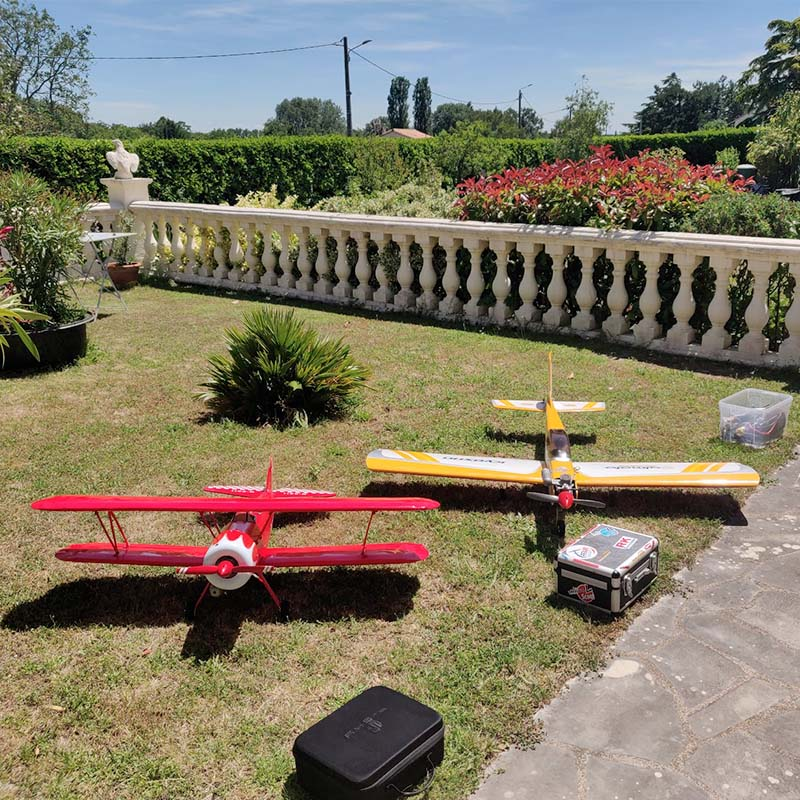
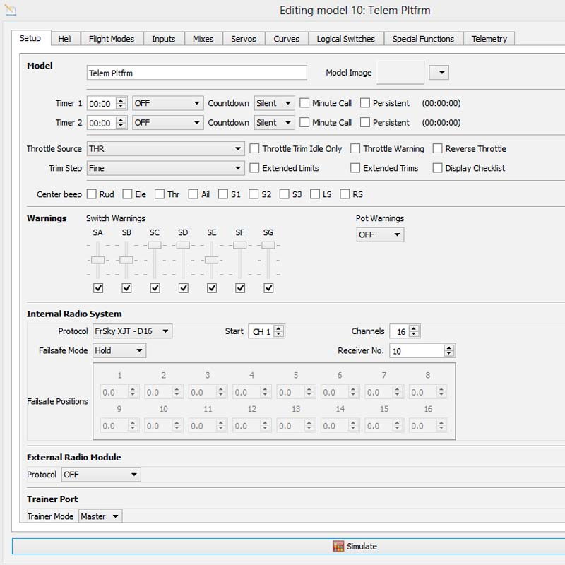
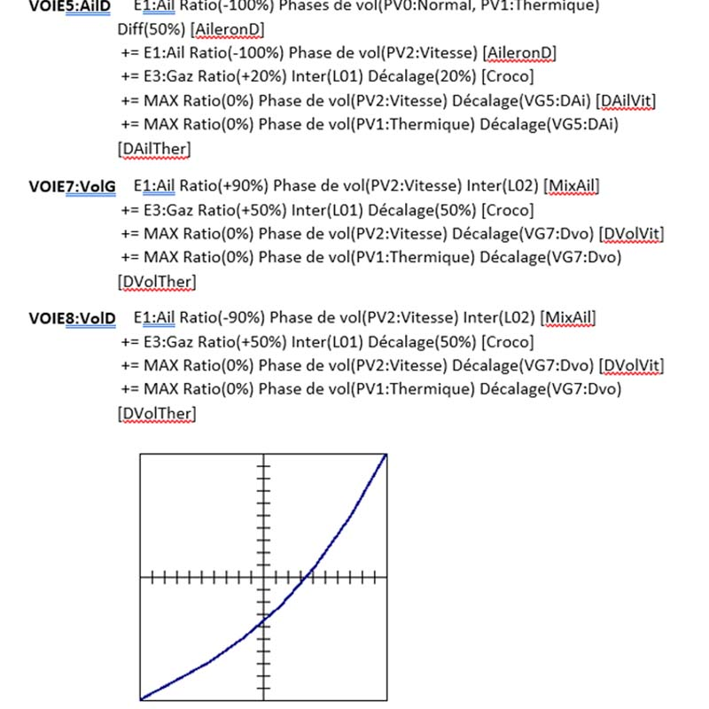
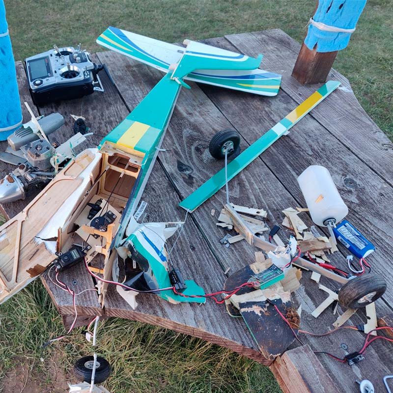
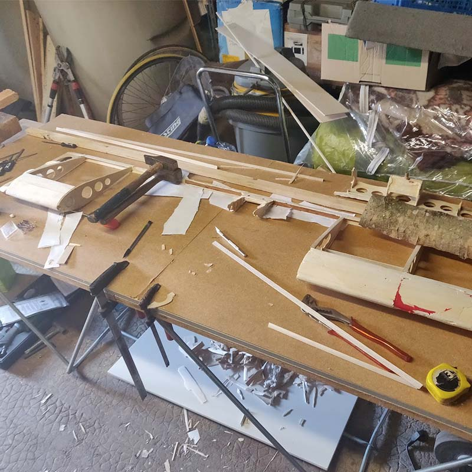
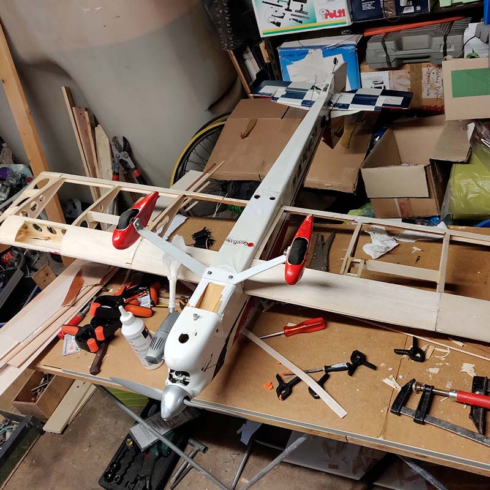

Aeromodelling
Niort aerodrome• 2018 - present
I had the opportunity to actively participate in the ASPAN (Association de Sauvegarde du Patrimoine Aéronautique Niortais) association, where I contributed to the restoration of different types of aircraft, including a Nord 3202 and a Nord 1101. This experience also allowed me to develop contacts that led me to join the AMCN (Aero Model Club Niortais) association. The latter allows me to pursue my interests in mechanics, computing and electronics.
I bought several planes, a Futaba T10CG radio control, and later a Frsky Taranis X9D Plus. The advantage of the latter is that it is designed to receive open source firmware, highly configurable and with many more features.



Two crashes to my credit:
- 1st crash: Calmato high wings, too much resource, servo not powerful enough to raise the pitch control
- 2nd crash: U-Can-Do 3D, faulty plane battery, loss of communication, throttle stuck at 100%.
Rebuilding planes, a test of patience...


